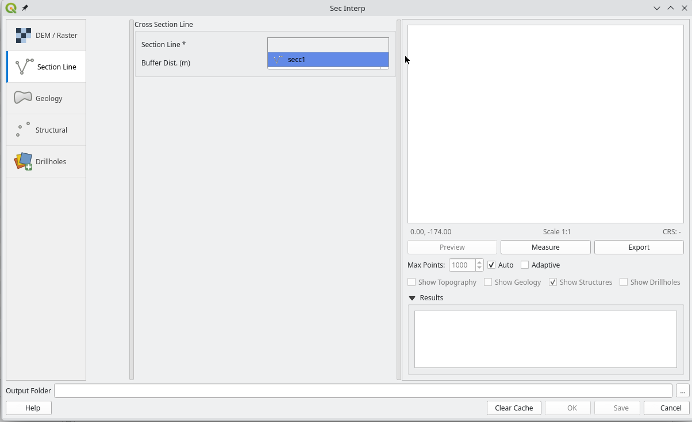
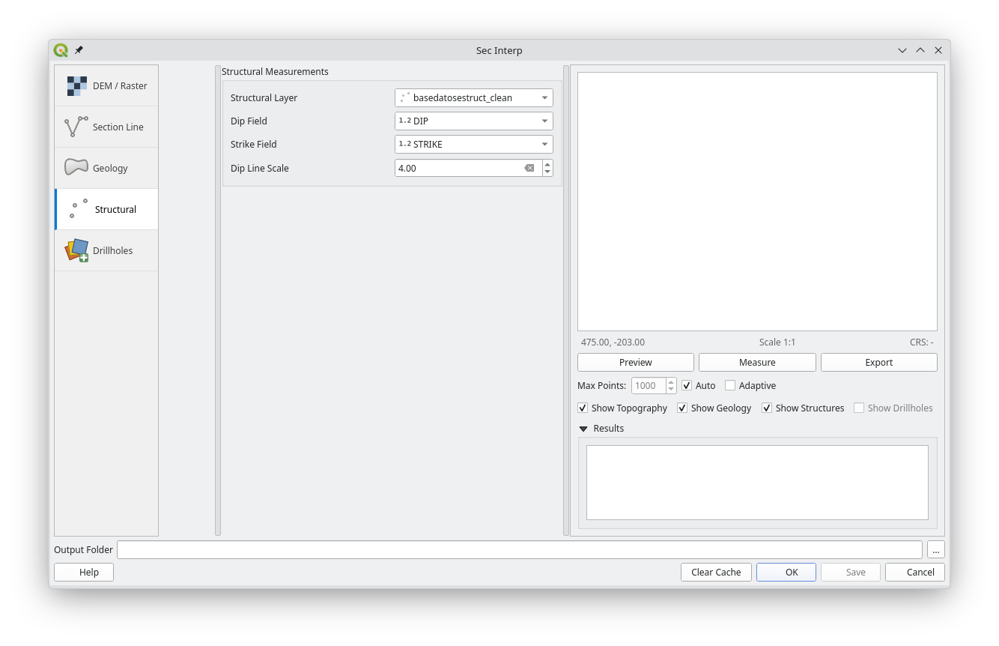
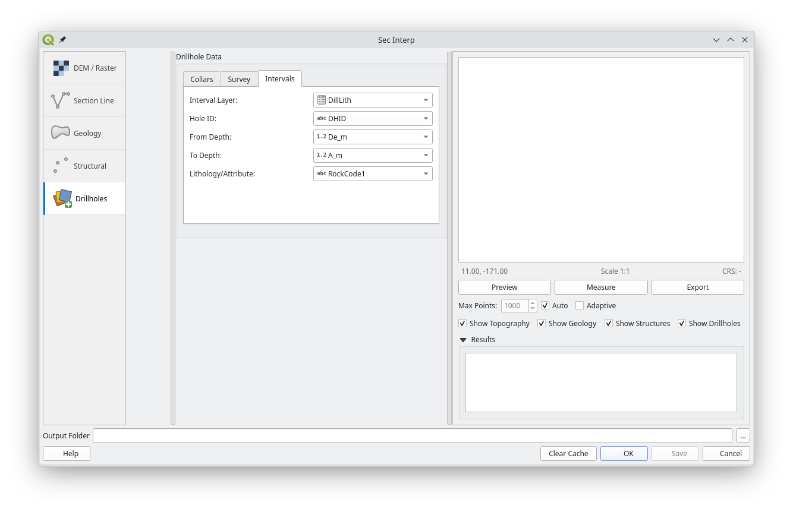
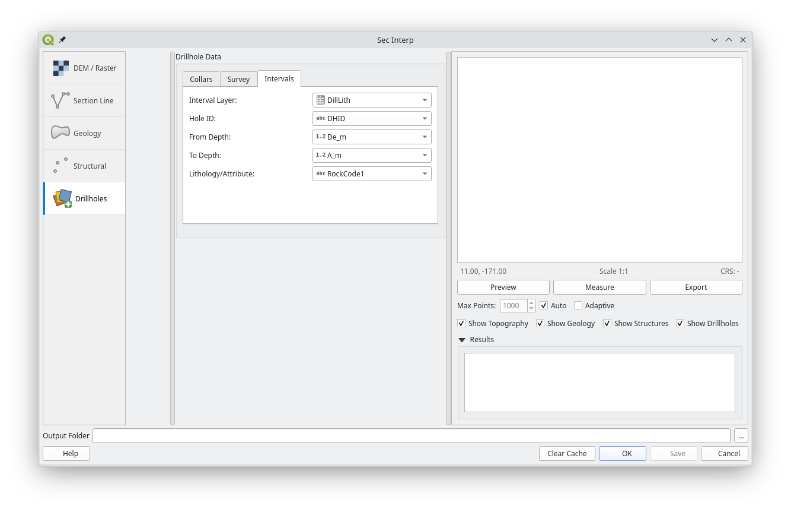

SecInterp User Guide¶
1. Introduction¶
Welcome to the SecInterp plugin! This guide will help you get started with creating geological cross-sections from your QGIS layers.
SecInterp allows you to:
Create a topographic profile from a Digital Elevation Model (DEM).
Project geological units from a polygon layer onto the profile.
Project structural measurements (e.g., dip and strike) onto the profile.
New: Project drillhole traces and geological intervals (sondajes) onto the section.
View an interactive preview with level-of-detail (LOD) optimization.
New: Measure distances and gradients with automatic snapping to vertices.
Export data to CSV and Shapefile formats, and export the preview to image/vector formats.
2. The Main Window¶
The SecInterp dialog is divided into three main areas:
Settings Panel (Left): Where you select your layers and adjust parameters.
Preview Panel (Right): Where you see the interactive preview of your cross-section.
Output & Actions (Bottom): Where you specify the output folder and execute actions like “Preview”, “Save”, and “OK”.

3. Step-by-Step Tutorial: Creating a Basic Profile¶
This tutorial will guide you through creating a simple topographic profile.
Step 1: Select Input Layers¶
DEM / Raster: In the “Digital Elevation Model” section, click the “Raster Layer” dropdown and select your DEM layer.

Section Line: In the “Section Line” section, click the “Cross-section line layer” dropdown and select the line layer that represents your cross-section path. 
Step 2: Generate a Preview¶
Once you have selected both a raster and a line layer, the “Preview” button in the bottom right will become enabled.
Click “Preview”.
The topographic profile will be generated and displayed in the preview panel. You can pan by clicking and dragging and zoom using the mouse wheel.

Step 3: Add Geological Data (Optional)¶
Go to the “Geology” section in the settings panel.
Select your geological polygon layer in the “Outcrop layer” dropdown.
Select the field that contains the geological unit names in the “Geology field” dropdown.
Click “Preview” again. The geological units will now be drawn on top of your topographic profile.

Step 4: Add Structural Data (Optional)¶
Go to the “Structural” section.
Select your structural point layer in the “Structural layer” dropdown.
Select the fields corresponding to “Dip” and “Strike”.
Adjust the “Buffer” distance. Only points within this distance from your section line will be considered.
Click “Preview” again. The structural measurements will be projected onto your profile as small lines. 
Step 5: Add Drillhole Data (Optional)¶
Go to the “Drillholes” section.
Select your “Collar layer” (points) and “Survey layer” (or use auto-calculation for vertical holes).
Choose the “Interval layer” for geological logging.
Configure the depth and geology fields.
Click “Preview”. The drillhole traces and intervals will appear in the section, projected into the 2D plane.

 

4. Understanding the Settings¶
DEM / Raster¶
Raster Layer: Your source DEM.
Band: The raster band to get elevation data from (usually Band 1).
Scale: The map scale you intend for your final output. This helps with some calculations.
Vert. Exag.: Vertical Exaggeration. A value of
2.0will make the vertical scale twice as large as the horizontal scale, exaggerating topographic features.
Section Line¶
Cross-section line layer: The vector line layer defining your profile path.
Buffer: The distance (in layer units) from the line to search for structural data points.
Drillholes¶
Collar Layer: Point layer with hole locations.
Survey Layer: Data for hole orientation (Dip/Azimuth).
Interval Layer: Geological or assay data with depth intervals.
Max Projection Dist.: Only holes within this distance from the section line will be shown.
Preview Controls¶
Max Points: (Only active if “Auto” is unchecked). Manually sets the level of detail. Lower values are faster but less detailed.
Auto: (Recommended). Automatically adjusts the level of detail as you zoom and pan.
Adaptive: (Recommended). Uses a smarter algorithm to simplify the line, preserving more detail in complex areas.
Show Topography/Geology/Structures: Use these checkboxes to toggle the visibility of different layers in the preview.
The Measure Tool¶
Click the “Measure” button in the preview panel to enable it.
Snapping: The tool automatically “snaps” to the nearest vertex or contact of the generated topography and geology, ensuring precise measurements.
Click and drag on the preview canvas to measure distance and slope. The results are displayed in the results panel.
Toggle the “Measure” button off to return to the pan tool.
5. Exporting Your Work¶
There are two ways to export:
Save Profile Data (
Savebutton):First, select an “Output Folder” at the bottom of the window.
Click the “Save” button.
This generates a set of CSV and Shapefile files in your output folder containing the raw data for the topography, geology, and structures. This is ideal for use in other software or for further analysis.
Export Preview Image (
Exportbutton):After generating a preview, click the “Export” button located under the preview canvas.
This allows you to save the current preview as an image (PNG, JPG) or vector graphic (SVG, PDF). This is ideal for including in reports and presentations.
6. Closing the Plugin¶
OK: Saves all your data (like the
Savebutton) and then closes the dialog.Cancel: Closes the dialog without saving any data.